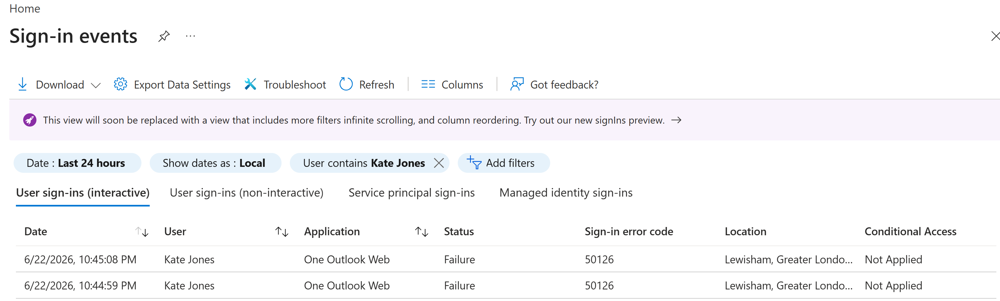
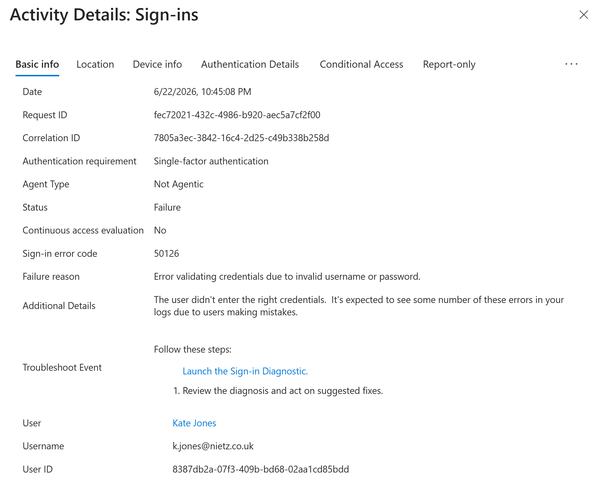
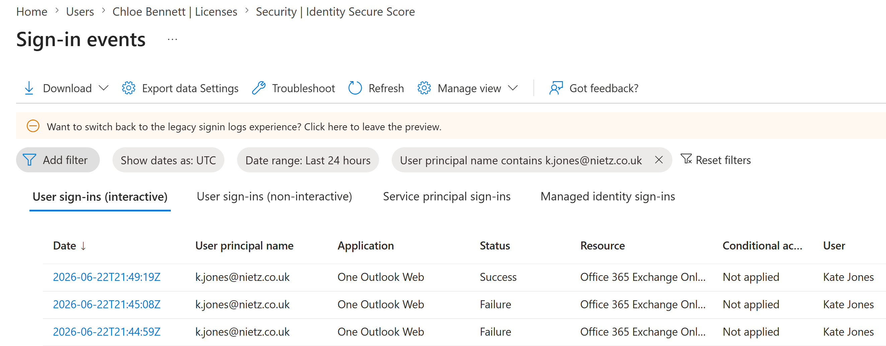
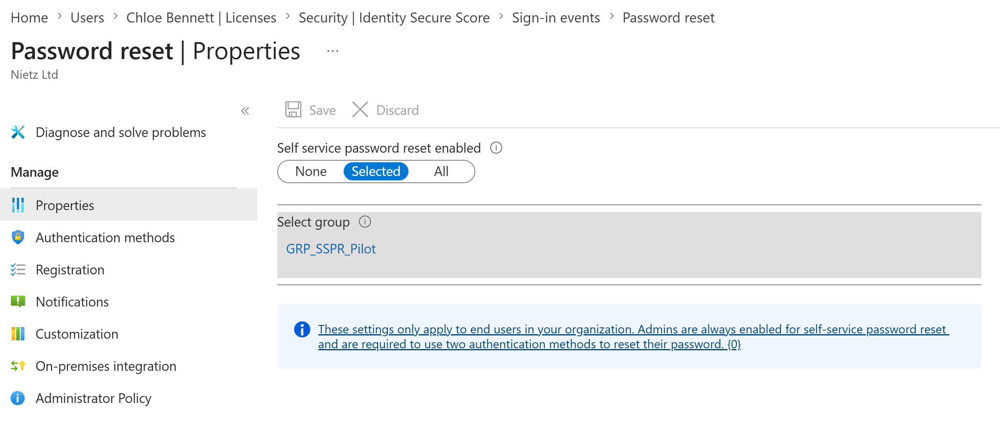
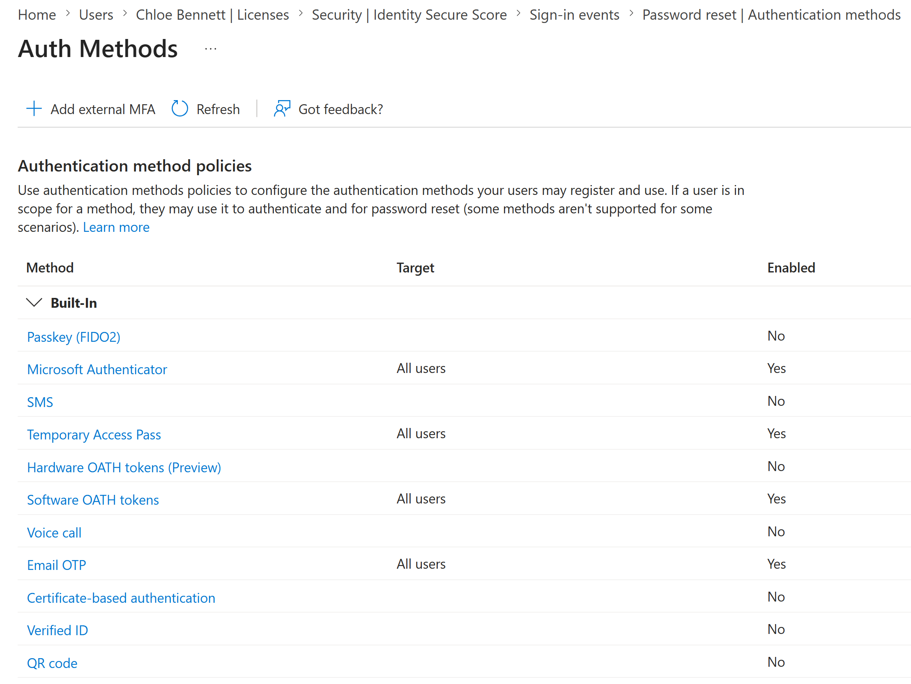
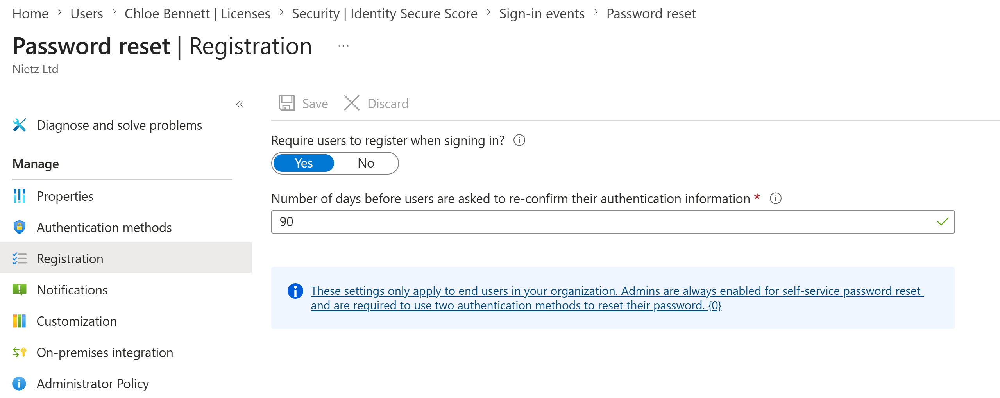
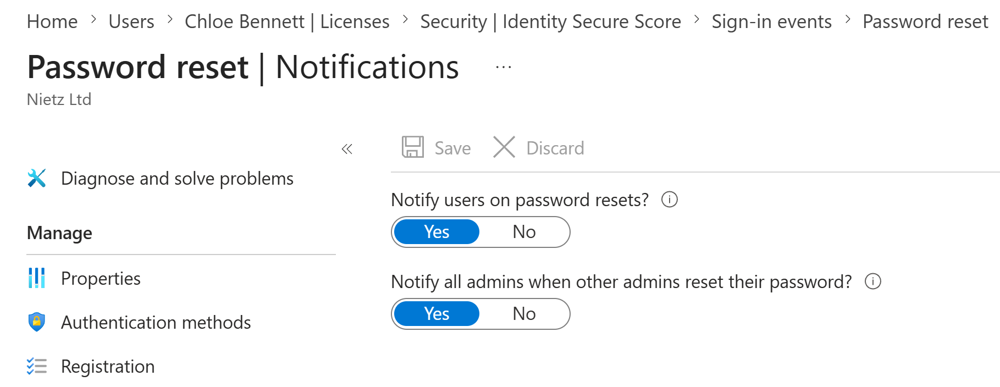
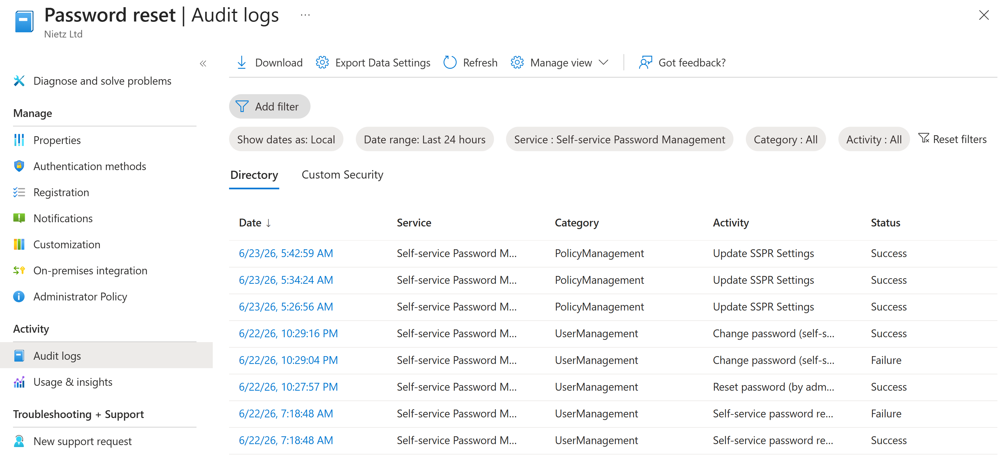
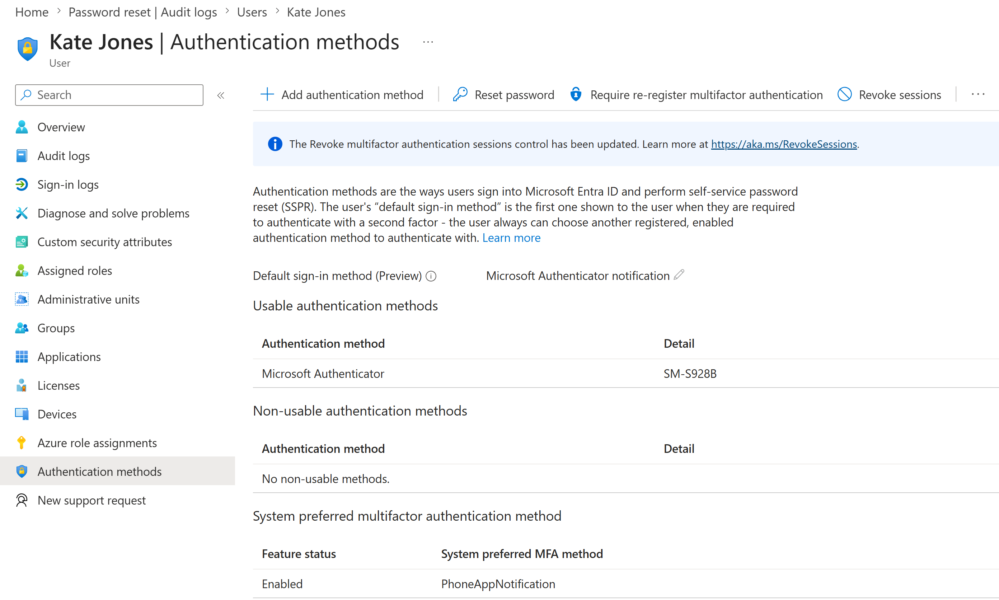

Lab 12: Entra Sign-In Logs, MFA and SSPR Support
Investigated a failed Microsoft 365 sign-in through Microsoft Entra logs, identified the authentication error, validated recovery and configured a controlled Self-Service Password Reset pilot for Nietz Ltd.
Overview
This lab extended the delegated identity administration model from Lab 11 into practical sign-in troubleshooting and recovery. The earlier Microsoft 365 labs established the cloud identity baseline, MFA readiness and pilot group model; this work used those foundations to investigate a user sign-in failure and configure a controlled SSPR rollout.
The scenario uses Kate Jones as the affected standard user and Chloe Bennett as the delegated helpdesk context from the previous lab. The work demonstrates both troubleshooting evidence and configuration evidence: failed sign-in logs, detailed error analysis, successful recovery, SSPR pilot scoping, authentication method policy, registration settings, notification settings, audit logs and user authentication method validation.
Objective
The objective was to show how a Microsoft 365 support analyst can investigate user sign-in failure, confirm the cause through Entra logs, validate successful recovery, and reduce future helpdesk dependency by enabling SSPR for a small pilot group.
Environment
| Component | Value |
|---|---|
| Company | Nietz Ltd |
| Microsoft 365 / Entra domain | nietz.co.uk |
| Licence baseline | Microsoft 365 Business Premium |
| Daily administrator | k.nietzold@nietz.co.uk |
| Delegated helpdesk user | c.bennett@nietz.co.uk |
| Affected user | k.jones@nietz.co.uk |
| SSPR pilot group | GRP_SSPR_Pilot |
| Authentication method validated | Microsoft Authenticator notification |
| Sign-in error investigated | 50126 - invalid username or password |
| Previous lab dependency | Lab 11: Entra ID Users, Groups and Roles |
| Next lab dependency | Lab 13: Hybrid Identity Readiness |
Configuration and Evidence
1. Failed Kate Jones Sign-In Events Filtered
I filtered Entra sign-in events for Kate Jones and confirmed repeated failed interactive sign-ins to One Outlook Web.

50126.2. Sign-In Failure Detail Reviewed
I opened the failed sign-in event and reviewed the basic details. The failure reason showed that the credentials were not valid.

Failure, error code 50126, and invalid username or password as the failure reason.50126 supports a credential-focused recovery path rather than a Conditional Access, licensing or service availability escalation.3. Successful Sign-In Confirmed After Recovery
After the account recovery action, I refreshed the sign-in logs and confirmed a successful Kate Jones sign-in above the earlier failed attempts.

4. SSPR Enabled for a Pilot Group
I enabled Self-Service Password Reset for the dedicated pilot group GRP_SSPR_Pilot rather than enabling it tenant-wide.

GRP_SSPR_Pilot.5. Authentication Methods Policy Reviewed
I reviewed the tenant authentication methods policy and confirmed Microsoft Authenticator, Temporary Access Pass, Software OATH tokens and Email OTP were enabled for all users, while SMS and voice call were not enabled.

6. SSPR Registration Policy Configured
I configured users in scope to register when signing in and set authentication information reconfirmation to 90 days.

7. SSPR Notification Policy Confirmed
I confirmed that users are notified on password resets and that admins are notified when other admins reset their password.

8. SSPR Audit Log Validated
I checked the SSPR audit log and confirmed successful Update SSPR Settings events for the configuration changes.

Update SSPR Settings.9. Kate Jones Authentication Method Confirmed
I checked Kate Jones' authentication methods and confirmed Microsoft Authenticator was available as a usable method with Microsoft Authenticator notification as the default sign-in method.

Validation
The troubleshooting path was validated when Kate Jones' failed sign-ins were visible in Entra sign-in logs, the failed event showed error code 50126, and a later sign-in showed successful access after recovery.
The SSPR rollout was validated when password reset was scoped to GRP_SSPR_Pilot, supported authentication methods were visible in the authentication methods policy, registration and notification settings were configured, successful SSPR policy updates appeared in audit logs, and Kate Jones had Microsoft Authenticator available as a usable method.
Key Technical Outcomes
This lab demonstrated practical Microsoft Entra sign-in troubleshooting, including filtered sign-in log review, event-level error analysis and post-fix validation.
It also demonstrated a staged SSPR rollout using a dedicated pilot group, supported authentication methods, registration enforcement, reset notifications and audit-log validation.
Summary
- I filtered Entra sign-in logs for Kate Jones and identified failed One Outlook Web sign-ins.
- I reviewed the failed sign-in detail and confirmed error code
50126. - I validated a later successful Kate Jones sign-in after recovery.
- I enabled Self-Service Password Reset for
GRP_SSPR_Pilot. - I reviewed the tenant authentication methods policy.
- I configured SSPR registration and notification settings.
- I confirmed SSPR configuration changes in audit logs.
- I validated Kate Jones' Microsoft Authenticator method.